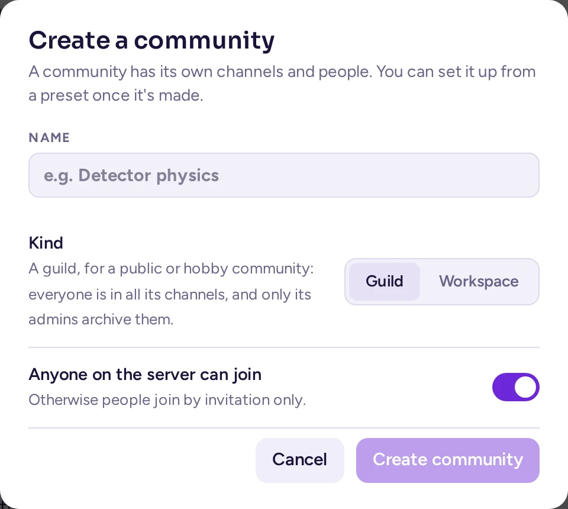
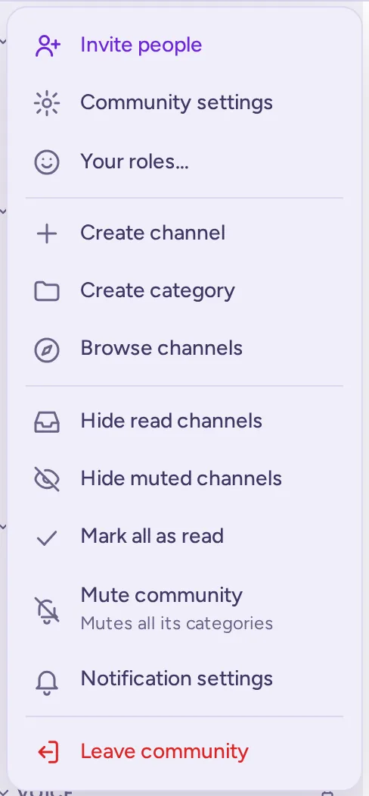

Running a community
This guide is for the people who run a community on Antimatter: its admins and its moderators. It explains how to set the community up, organise its channels, give people roles, welcome newcomers and keep the place pleasant.
What a community is
A community is a space on an Antimatter server with its own channels, members, roles and rules. Each community has an icon in the community rail, the column on the far left of the window. One server can hold many communities, and one person can belong to several of them. Direct messages are not part of any community: they follow you everywhere on the server.
In the System Console and in some older dialogs, a community is still called a "team". The two words mean the same thing. In Antimatter, "teams" are something else: groups of people inside a community, with a tag and a lead (see Teams inside a community).

Two kinds of community
Antimatter is used in two quite different ways. This guide covers both, and says where the advice differs. Each community has a kind, Guild or Workspace, which its admins choose in its settings: it decides, for example, who can archive channels (see Kind of community).
| Company or organisation workspace | Public or hobby community | |
|---|---|---|
| Who is in it | Colleagues, and sometimes guests from partner organisations. | Anyone who finds it, often strangers to each other. |
| How people join | Invitations, or an email domain such as your company's. | An open community anyone on the server can join, or a shared invitation link. |
| Channels | Many channels per team or project; people join the ones of their work. | Fewer channels, with everyone in all of them. |
| What admins care about | Control, guests, retention of messages, compliance. | Moderation, roles, onboarding newcomers. |
| Where to read more | Running Antimatter for an organisation | Moderation |
Who does what
Antimatter has a few built-in roles, and each community can add its own roles on top of them.
- System admin: runs the whole server. System admins can do everything in every community, and they are the only people who can use the System Console, the server's administration pages. If you are not one, you will need one for some tasks; this guide says when.
- Community admin: runs one community. Community admins change the community's settings, make other people community admins, create roles, and moderate anyone except other admins. Their profile card shows a Community Admin chip. Whoever creates a community becomes its first admin.
- Member: everyone else in the community. By default, members can create channels, invite people, and rename and manage the members of the channels they are in. In a workspace, they can also archive the channels they created.
- Guest: someone from outside, limited to the channels they are invited to. Guests exist only if a system admin has turned on guest accounts.
- Channel admin: a member with extra rights in one channel. Their profile card shows a Channel Admin chip.
There is no built-in "moderator" role. Moderators are a custom role that you create, choosing exactly what they can do: delete messages, time people out, remove them, manage channels. The community layout presets create a "Moderators" role for you. See Roles and permissions.
Create a community
- In the community rail, choose the + button (Add a community), then Create a community.
- Enter a Name. You can change it later. The server makes the community's address from it, adding a number if it is taken; there is no address field to check, and the address can't be changed later.
- Choose the Kind, Guild or Workspace, starting from the server's default.
- Leave Anyone on the server can join on for an open community, or turn it off so that people join by invitation only.
- Choose Create community.
You land in General, the community's first channel; it also gets a Welcome channel for its join and leave messages. You are its admin. Antimatter then offers to set the community up from a preset; see Community layout.

If you don't see Create a community, your system admin has not given you the permission to create communities (Create Teams in the System Console's permissions).
The community menu
Most of what this guide describes starts from the community menu. Open it by clicking the community's name at the top of the channel list, or by right-clicking the community's icon in the rail. What you see in it depends on your rights:
- Invite people, Community settings and Your roles…. Community settings shows to everyone who manages something in the community: its settings, its roles, its model connections, its membership rules or its integrations. Each of them sees only the tabs they may use, among them Members, Teams and, at the end, a link to the community's Integrations. People without it see View members and Teams… instead.
- Create channel, Create category and Browse channels.
- Personal choices: Hide read channels, Hide muted channels, Mark all as read, Mute community and Notification settings.
- The apps' actions, then Leave community.

A checklist for a new community
- Give it a description and an icon, and decide who can join: Community settings.
- Decide whether everyone is in every channel, and set up the categories and channels: Channels.
- Create the roles you need, at least moderators: Roles and permissions.
- Write an onboarding and invite people: Members and onboarding.
- Agree on how you will moderate: Moderation.
- Add custom emoji, autolinks and integrations: Apps and integrations.
For everyday use of Antimatter (messages, threads, calls, notifications), see Using Antimatter. For installing and configuring the server, see Running a server.